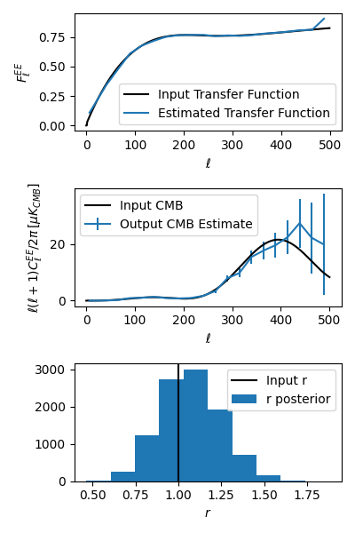

Quick Start¶
In this page we’ll go over the basics of using the code and its outputs.
Dependencies¶
numpyhealpycambemcee(only for likelihoods)h5py(only for likelihoods)
XFaster is compatible with Python versions 3.0 and higher.
Installation¶
After cloning the repo (https://github.com/annegambrel/xfaster), install xfaster:
$ python setup.py install
Or, if installing on a shared machine:
$ python setup.py install --user
Note: Every time you pull or make local changes to files in xfaster/xfaster, you must reinstall for them to take effect.
XFaster is under active development as we add new features– if something is broken, try to git pull and reinstall!
Example Script¶
To get started with the code before running it on your data, you can run through the example, described in more detail in the Tutorial link.
First, generate the small ensemble of maps by running make_example_maps.py in the examples directory.
This should take about 15 minutes on an 8-core laptop.
Then, run xfaster_example.py.
This should take about 20 minutes with 8 cores.
This runs XFaster on the example maps, so you can see the step-by-step process and look at the outputs, as demonstrated below.
Setting up your data¶
Map Data¶
The code requires a certain directory structure for your input maps:
<data_root>/
├── data_<data_type>
│ ├── <data_subset1>
│ │ ├── map_<tag1>.fits
│ │ ├── ...
│ │ ├── map_<tagN>.fits
│ ├── <data_subset2> (same filenames as <data_subset1>)
│ ├── ....
│ ├── <data_subsetM>
├── signal_<signal_type>
│ ├── spec_signal_<signal_type>.dat
│ ├── <data_subset1>
│ │ ├── map_<tag1>_0000.fits
│ │ ├── ...
│ │ ├── map_<tag1>_####.fits
│ │ ├── ...
│ │ ├── map_<tagN>_0000.fits
│ │ ├── ...
│ │ ├── map_<tagN>_####.fits
│ ├── ....
│ ├── <data_subsetM> (same filenames as <data_subset1>)
├── noise_<noise_type> (same filenames as signal_<signal_type>)
├── masks_<mask_type>
│ ├── mask_map_<tag1>.fits
│ ├── ...
│ ├── mask_map_<tagN>.fits
[[optional:]]
├── foreground_<foreground_type> (same filenames as signal_<signal_type>
├── templates_<template_type>
│ ├── halfmission-1 (same filenames as data_<data_type>)
│ ├── halfmission-2 (same filenames as data_<data_type>)
└── reobs_planck (same filenames as templates_<template_type>, used if sub_planck=True for null tests)
The required types of maps are data, signal simulations, noise simulations, and masks.
Each map should have a tag, which is used consistently across these different map types.
This would typically be a frequency or some subset of detectors.
For example, SPIDER has two tags: 95 and 150.
Further subsetting of the data, ie., by time splits, is done through use of the <data_subset>> directories.
These should contain independent subsets of data, as they are used to construct cross-spectra.
For example, SPIDER has four subsets, labeled 1of4, 2of4, etc, to contain maps from every fourth set of interleaved ten-minute chunks.
For each map tag and for each data subset in your data directory, you must have at least one (but generally at least 100, for reasonable statistics) maps in your signal and noise directories. These have the same directory structures, but the maps now have additional numerical tags for each realization of randomly generated signal or noise. The tags don’t have to start at 0 or be contiguous– the code will simply look for any maps in your sim directories that has the same map tag and data_subset as what you’ve picked for the data and use all of them, unless you set an option to say otherwise. The signal map directory must also contain a spectrum file containing the \(\ell(\ell+1)C_\ell/(2\pi)\) spectra used to create the realizations in the directory. This spectrum in used in computing the transfer function.
One mask is required per map tag.
These files begin with mask_map_ instead of map_.
Optional inputs are described in Tutorial.
Non-Map Data¶
The other data you’ll need to provide are your beam window functions and the band centers of the input maps (if fitting for foregrounds). These are specified in a config file, an example of which is in config_example.ini.
Beams can be specified either with a simple FHWM, if using a Gaussian beam model, or with an ell-by-ell beam window function, stored in a .npz file.
The .npz file should contain a dictionary with a key for each map tag.
The beams can be an \(\ell\) -length vector, or a 3 \(\times \ell\) - shape array if different beams are desired for Stokes I/Q/U.
Running the code¶
An example of a script to run XFaster can be found in xfaster_example.py.
This script points to where the data lives, the tags used to fill in options in your file structure tree, what config file to use, and lots of other options you can give to the code.
These aren’t all the options– the API reference for xfaster_run() contains descriptions of all the arguments you might wish to use.
After setting up your config file and setting the options in your submit script, you then need to decide if you’re submitting this to a cluster (xfaster_submit()) or running it in your current environment (xfaster_run()).
The example script has both options available.
If submitting to a grid, additional submit options are required, and these are included in the arguments passed to xfaster_submit().
Reading the outputs¶
As steps of the algorithm are completed, intermediate outputs are written to disk in the form of .npz numpy dictionary files.
If a run is interrupted for any reason, it can be restarted from the previously completed checkpoint.
The files written to disk are:
files.npzAll specifiers to indicate which maps files are used
masks.npzThe cross-spectra of the masks
kernels.npzThe \(K_{\ell\ell'}\) mode-coupling kernels
sims_xcorr.npzThe cross-spectra of signal and noise simulation
beam.npzThe beam window functions, per map
transfer.npzThe filter transfer functions, computed per map
data_xcorr.npzThe cross-spectra of all the data maps
bandpowers.npzThe computed bandpowers
likelihoods.npzThe likelihoods for parameters
For a detailed overview of the various fields contained in each dictionary, see Tutorial.
Whenever you want to read in some data the XFaster code wrote, you’ll want to use the function load_and_parse.
This includes all the files detailed in the list above.
You can then look through keys, where the dictionaries are all structured as main field name -> spectrum type -> map/cross spectrum.
In the last category, cross spectra are indicated with a colon, so if I had two maps tagged as 95 and 150 that I’m inputting the algorithm, the spectrum fields I should find are 95:95, 150:150, and 150:95 (crosses are in alphabetical error, as they are read as strings).
Here, we have the two map auto-spectra first, and then the cross between them.
If there are multiple maps with the same tag but that use different <<data_subsets>> as described in Maps above, these will be assigned an additional numerical tag, so you might have something like 95_0:95_1 for the cross between map 95 in data_subset1 and data_subset2.
Below, we show how to load up some bandpowers, error bars, transfer function, and r-likelihood from the example script outputs. This script is also in the repo: xfaster/example/plot_outputs.py
import numpy as np
import matplotlib.pyplot as plt
import xfaster as xf
from xfaster import xfaster_tools as xft
# First, load up inputs to our sims so we can check how well they're recovered
# (bearing in mind, this is a single sim, so noise fluctuations and sample
# variance will cause scatter.
r_in = 1.0
Dls_in = xft.get_camb_cl(r=r_in, lmax=500, lfac=True)
Fl_in = np.loadtxt("maps_example/transfer_example.txt")
# load up bandpowers file, where most of the useful stuff is stored
bp = xf.load_and_parse("outputs_example/95x150/bandpowers_95x150.npz")
ee_bin_centers = bp["ellb"]["cmb_ee"] # weighted bin centers
ee_specs = bp["cb"]["cmb_ee"] # estimated CMB spectra with ell*(ell+1)/(2pi) factors
ee_errs = bp["dcb"]["cmb_ee"] # estimated CMB error bars
spec_cov = bp["cov"] # Nspec * Nbin square covariance matrix
ee_transfer_150 = bp["qb_transfer"]["cmb_ee"]["150"] # transfer function using the same bins
fig, axs = plt.subplots(3, 1, figsize=(4,6))
axs[0].plot(Fl_in[:500], color="k", label="Input Transfer Function")
axs[0].plot(ee_bin_centers, ee_transfer_150, label="Estimated Transfer Function")
axs[0].set_ylabel(r"$F_\ell^{EE}$")
axs[0].set_xlabel(r"$\ell$")
axs[0].legend()
axs[1].plot(Dls_in[1], color="k", label="Input CMB")
axs[1].errorbar(ee_bin_centers, ee_specs, ee_errs, label="Output CMB Estimate")
axs[1].set_ylabel(r"$\ell(\ell+1)C_\ell^{EE}/2\pi\, [\mu K_{CMB}]$")
axs[1].set_xlabel(r"$\ell$")
axs[1].legend()
# Now get r-likelihood-- should be near the input r=1, but with scatter since it's
# just one sim realization
lk = xf.load_and_parse("outputs_example/95x150/like_mcmc_95x150.npz")
axs[2].axvline(r_in, color="k", label="Input r")
axs[2].hist(lk["samples"], label="r posterior")
axs[2].set_xlabel(r"$r$")
axs[2].legend()
plt.tight_layout()
plt.savefig("outputs_example.png")
plt.show()
The results should look like what’s shown below. We recover our inputs pretty well within expected noise and signal variance. Recovery is a bit worse at high ell because we aren’t accounting for leakage from even higher up bins– you’ll want to use an \(\ell_{max}\) a bit above what you plan to use for analysis for this reason.
{kind=link}
And that covers the basics!